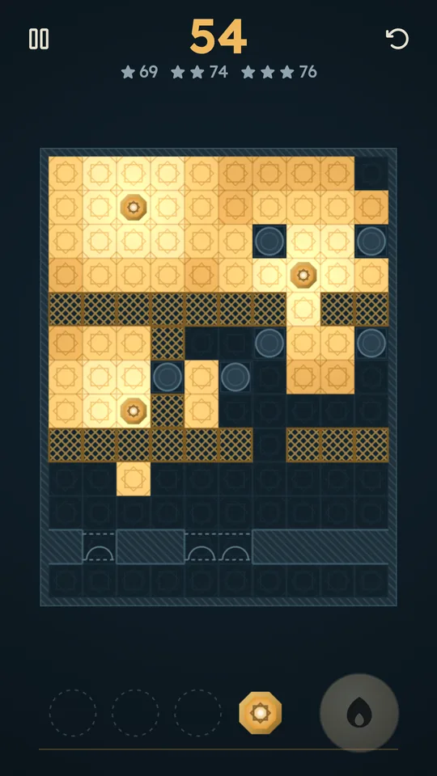
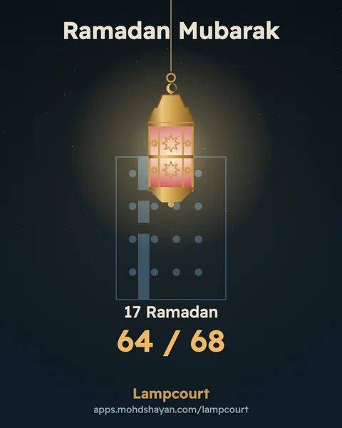
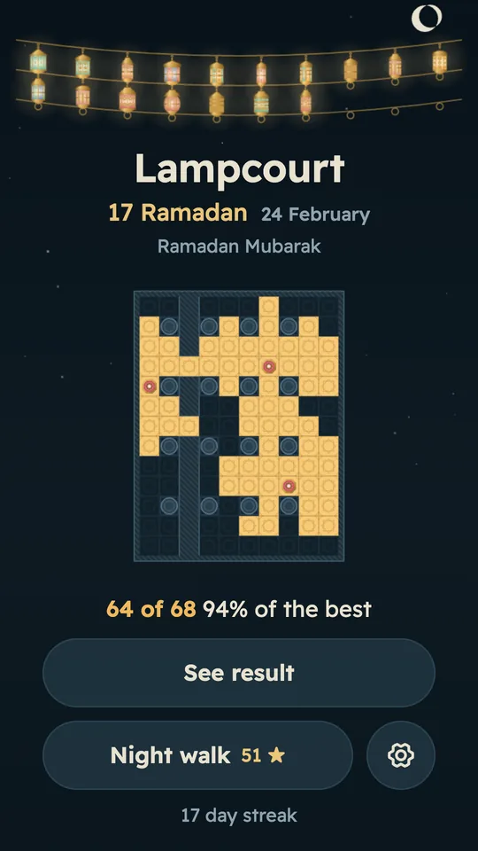
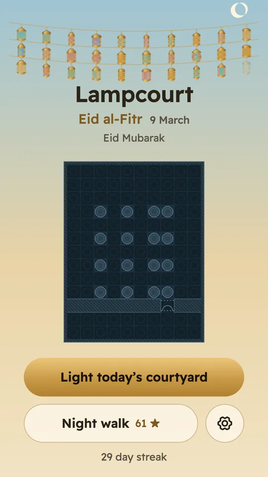
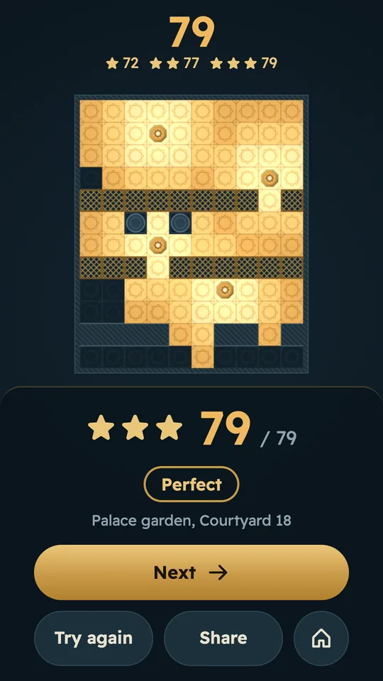
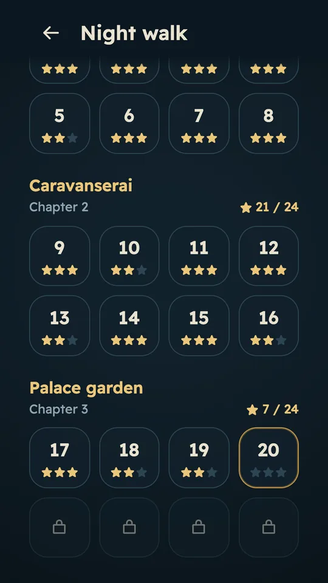

Light the courtyard. Beat the shadows.
Place three lanterns on a night plan, then see how close you came to the best possible light.
How to play
Drag a lantern onto the floor
Take a lantern from the tray at the bottom and drop it on any floor tile or arch. Every tile it can see lights up in gold, and the counter at the top tells you how many tiles are lit. You can also tap a tile to place the next lantern there.
Move it until the light fits
Drag a placed lantern to try another spot, or tap it to pick it up. Undo takes back a move as often as you like. Nothing is scored yet, so treat the counter as a test bench and try ideas freely.
Press Light when you are sure
When every lantern is down, the lantern button at the bottom wakes up. Press it to submit. The game then shows your count against the best count possible for that courtyard, and one placement that reaches it.
Compare with the best
Switch between Yours and Best to see where the best lanterns stood. Dashed rings mark the spots you missed. Match the best and the result reads Perfect. There is no timer and no way to fail.

What the light does
Lanterns reach about three tiles
A lantern lights every tile it can see within about three tiles in a straight line, a little less on the diagonals. A tile lit by two lanterns still counts once, so spread them out.
Walls stop it
Hatched walls block light completely. Rooms behind them stay dark unless a lantern can see in.
Columns cast shadows
A round column throws a wedge of shadow behind it, but light still slips through the gaps between columns.
Arches open a wall, screens dim it
An arch is a gap in a wall that light passes straight through, and a lantern can stand in it. A brass lattice screen lets light through but cuts its reach to about two tiles; behind two screens, nothing is lit.

One courtyard a day, the same for everyone
Every day brings a new daily courtyard with three lanterns, the same for every player on the same date. You get one Light. Before the day's table was made, a solver tried every possible placement to find the best count, and each courtyard was chosen so that moving one lantern at a time rarely gets there. You have to look at the whole plan.
Light it, see your score, and keep your streak going. The Share button makes a card with the date and your count against the best. It never shows where you put your lanterns, so friends can still solve the same courtyard.
A lantern for every day of Ramadan
Through Ramadan each date brings its own lantern, made of brass and coloured glass, that hangs over that day's courtyard. Light the daily and it joins the string above your own courtyard on the home screen, until all thirty hang there. On Eid morning your courtyard turns to daylight.
The dates follow the Umm al-Qura calendar: Ramadan 1448 is expected to begin on 8 February 2027, with Eid al-Fitr on 9 or 10 March. If your community starts a day earlier or later, Settings moves the Ramadan dates by one day without changing the daily courtyard. After Eid the daily carries on all year.
In Ramadan the share card carries a typed greeting in your language: رمضان كريم, Ramadan Mubarak or Selamat berpuasa.


Tips for a brighter courtyard
Keep lanterns off the walls
A lantern against a wall or the courtyard's edge wastes half of its circle on stone. Start in open floor about three tiles from the edges, then move a lantern toward a wall only when that is the one way to reach a corner or a room.
Find the pockets first
Look for rooms that only open through an arch, and for corners hidden behind columns. They are where most of the lost light hides. A lantern standing in an arch, or just beside it, lights both sides of the wall at once.
Watch the overlap
A tile lit by two lanterns counts once. If two pools of light cover much of the same floor, one of those lanterns is not earning its place. Move it toward the darkest part of the plan and watch the counter.
Use the gaps between columns
Columns are round, so light slips past them on a slant. A lantern set diagonally to a row of columns often reaches far more tiles than one lined up with the row, which leaves a long shadow behind every column.
Mind the screens
One lattice screen cuts a lantern's reach to about two tiles, and two screens stop it. Put the lantern on the side of the screen with more floor, and light a narrow strip between two screens from inside it.
Try one fresh layout before you press Light
Nudging lanterns one at a time tends to stop just short of the best, and the dailies are chosen so that it does. When the counter stops climbing, lift all three, start again from the pockets, and compare the two counts. You have one Light in the daily, so spend a minute here.
Learn from the best placement
After Light, switch to Best and look at why each lantern stands where it does: usually one covers a pocket, one sits in the open, and one bridges an arch. Night walk is the place to practise, with stars at 90, 97 and 100 percent of the best.
Start with Night walk if you are new
The first Night walk courtyards teach the rules one at a time: columns in the Riad, then walls and arches, then lattice screens. A ghost hand shows the first move. The Caravanserai and the Palace garden add more lanterns and longer views.
In pictures


Questions
Is Lampcourt free?
Yes. The browser version and the Android app are both free. The Android app shows a full screen ad only between Night walk courtyards, and offers rewarded ads you can choose to watch for a bonus. One optional purchase, Remove ads and archive, removes those ads for good.
Are there ads in the daily courtyard?
No. In the Android app no ad ever shows before, during or after the daily courtyard, or inside any courtyard. On the web, ads appear only beside the game on wide screens, never over it or under it.
Does it work offline?
The Android app plays offline: the courtyards, the daily table and the Ramadan dates are all inside the app. Ads need a connection, and so does buying or restoring the purchase.
Is the browser version the same game?
It is the same game with the same daily courtyard on the same date. The past days archive, the Show one spot hint and Remove ads are only in the Android app.
Can I play past days?
In the Android app, the archive lists every past daily courtyard. A past day opens with a rewarded ad (up to three a day) or with Remove ads and archive. In Ramadan, opening a past day also recovers that date's lantern.
Which languages does it speak?
Play itself uses no words, only lanterns, light and numbers. Menus are in Arabic, with a right to left layout, and in Indonesian, Malay and English. The game picks your phone's language, and Settings changes it.
Who is it for?
Lampcourt is a puzzle for adults and older teens, aged 16 and over. It shows architecture, lanterns and light, with no characters.
Free, with ads you can remove
Lampcourt is free on Google Play with ads, and Remove ads and archive is an optional one-time purchase of USD 1.99 through Google Play (Play shows the price in your currency). It removes the ads between Night walk courtyards, opens every past daily courtyard, and gives the rewarded bonuses without an ad. It belongs to the Google account that bought it and comes back when you reinstall.